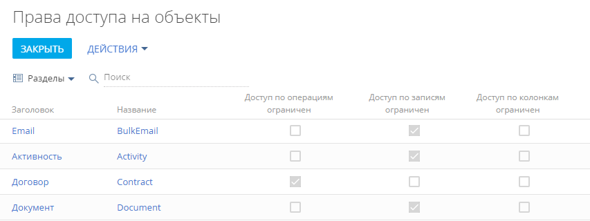
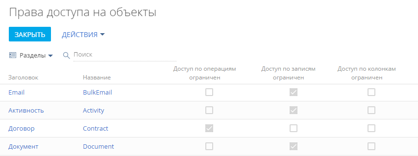
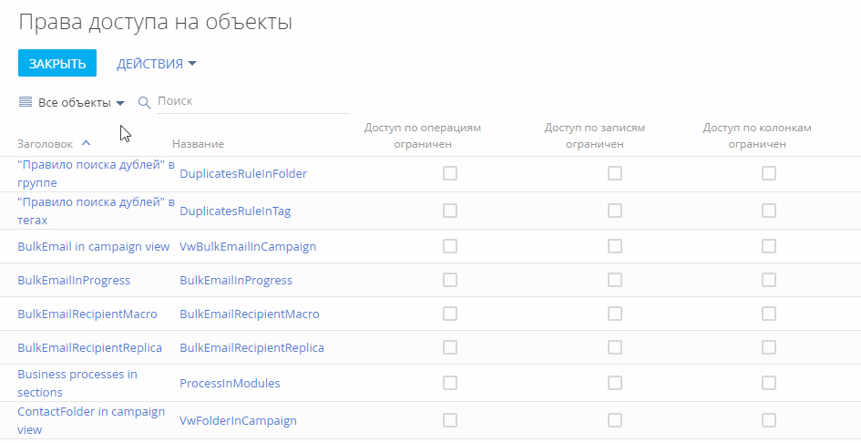
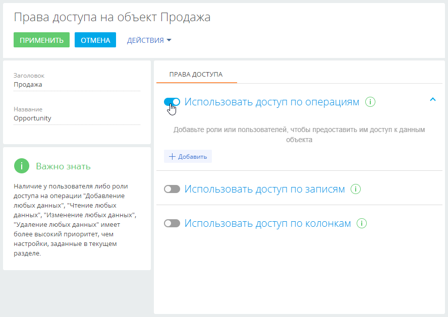
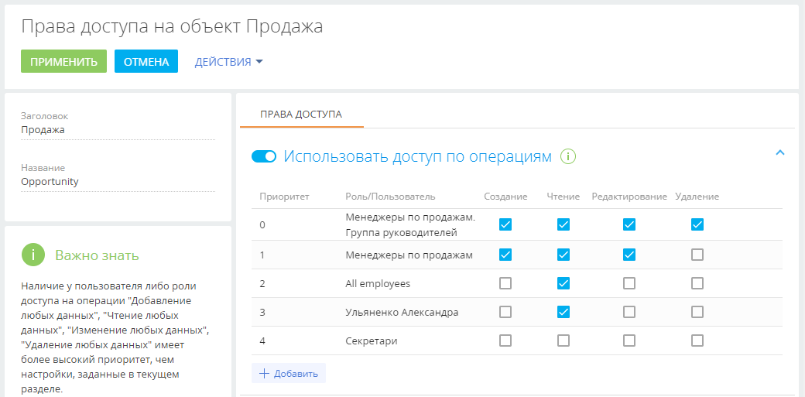
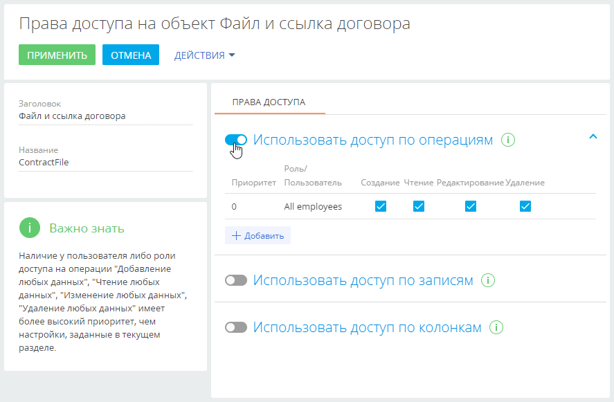

В этой статье рассмотрена настройка прав доступа к бизнес-данным. Доступ к бизнес-данным подразумевает выполнение CRUD-операций с данными (создание, чтение, редактирование и удаление) и выполняется через настройку прав доступа к соответствующим объектам системы.
Если вы только начинаете знакомство с Creatio, то рекомендуем ознакомиться с концепцией прав доступа на объекты Creatio в онлайн-курсе Управление пользователями и ролями. Права доступа.
Права доступа на объекты можно ограничить на следующих уровнях:
- По операциям. Ниже будет рассмотрена настройка прав на выполнение операций с данными, содержащихся в двух разных объектах системы — в разделе и на детали.
- По записям. Подробнее: Настроить доступ по записям.
- По колонкам. Подробне: Настроить доступ по колонкам.
Доступ к действиям системы предоставляется с помощью системных операций. Операции в объекте не следует путать с системными операциями. Настройки прав доступа к действиям системы выполняются в разделе Доступ к операциям дизайнера системы. Подробнее читайте в статье Настроить права доступа на системные операции.
По умолчанию в приложении настроены права:
- Для организационной роли “All employees” (“Все сотрудники”) предоставляется доступ на операции чтения, создания, редактирования и удаления записей всех объектов. Пользователи, входящие в роль “All employees”, будут иметь права на указанные операции, даже если доступ по операциям не используется и переключатель выключен.
- Для организационной роли “All portal users” (“Все пользователи портала”) запрещен доступ на выполнение любых операций с записями системы. Чтобы пользователи, входящие в роль “All portal users”, могли видеть на портале свои записи и данные своей организации, необходимо настроить в разделах, доступных на портале, права доступа по операциям.
- Для организационной роли “System administrators” (“Системные администраторы”) настроен доступ на системные операции “Добавление любых данных”, “Чтение любых данных”, “Изменение любых данных”, “Удаление любых данных”, имеющие более высокий приоритет, чем настройки, заданные в разделе Права доступа на объекты.
Настроить доступ по операциям в объекте раздела
-
Перейдите в дизайнер системы, например, по кнопке
 , и откройте раздел настройки доступа к объектам по ссылке “Права доступа на объекты”. (Рис. 1).Рис. 1 — Выбор объекта раздела и переход на страницу настройки прав доступа
, и откройте раздел настройки доступа к объектам по ссылке “Права доступа на объекты”. (Рис. 1).Рис. 1 — Выбор объекта раздела и переход на страницу настройки прав доступаОбратите внимание, признаки в колонках Доступ по операциям ограничен, Доступ по записям ограничен и Доступ к колонкам ограничен в реестре объектов не редактируются. Они устанавливаются автоматически в зависимости от того, какой тип администрирования доступа (по операциям, по записям, по колонкам) используется для каждого объекта. Если ни один из типов доступа к объекту не ограничен (не установлен ни один из признаков), то все пользователи имеют полный доступ к объекту и имеют право на создание, чтение, редактирование и удаление данных объекта.
-
Выберите необходимый объект из списка или с помощью строки поиска. Например, чтобы настроить права доступа к разделу Продажи, установите фильтр “Разделы” и выберите объект “Продажа”. Кликните по его заголовку или названию — откроется страница настройки прав доступа к объекту раздела Продажи (Рис. 2).
Рис. 2 — Выбор объекта раздела и переход на страницу настройки прав доступа -
Включите ограничение доступа по операциям с помощью переключателя “Использовать доступ по операциям” (Рис. 3).
Рис. 3 — Включение администрирования по операциям -
По кнопке Добавить добавьте роли и пользователей, для которых необходимо настроить права доступа. Используйте строку поиска, а также вкладки Организационные роли, Функциональные роли и Пользователи, чтобы быстро найти нужную роль или пользователя в списке окна выбора. В нашем примере это:
-
роль “All employees” (Все сотрудники) — добавляется автоматически;
-
организационная роль “Менеджеры по продажам”;
-
организационная роль “Менеджеры по продажам. Группа руководителей”;
-
организационная роль “Секретари”;
-
определенный пользователь с ролью “Секретари” (Рис. 4), например, Ульяненко Александра.
Рис. 4 — Добавление ролей и пользователей для предоставления им доступа к разделу
-
-
По умолчанию для каждой добавленной роли или пользователя устанавливается доступ на просмотр, создание, редактирование и удаление данных объекта. Откорректируйте уровень доступа в соответствии с необходимостью:
-
Для роли “Все сотрудники” оставьте признак только в колонке Чтение, а признаки в колонках Создание, Редактирование и Удаление снимите. В итоге все сотрудники компании смогут просматривать записи раздела Продажи, но не смогут их добавлять, вносить изменения и удалять.
-
Для роли “Менеджеры по продажам” оставьте признаки в колонках Создание, Чтение и Редактирование, а признак в колонке Удаление снимите. В итоге сотрудники отдела продаж смогут просматривать, добавлять и редактировать записи раздела, но не будут иметь возможности их удалять.
-
Оставьте признаки в колонках Создание, Чтение, Редактирование и Удаление для роли “Менеджеры по продажам. Группа руководителей”. Так руководитель менеджеров по продажам получит право на просмотр, добавление, изменение и удаление записей раздела Продажи.
-
Для роли “Секретари” снимите признаки в колонках Создание, Чтение, Редактирование и Удаление. В итоге для секретарей компании раздел Продажи будет скрыт.
-
Для определенного пользователя, который входит в роль “Секретари” (в нашем примере это Ульяненко Александра) оставьте признак в колонке Чтение. Так пользователь Ульяненко Александра получит право на просмотр записей раздела Продажи.
После выполнения настроек рядом с некоторыми правами доступа могут отображаться значки
 . Это означает, что некоторые настройки противоречат друг другу и для корректной работы прав доступа необходимо настроить их приоритет.
. Это означает, что некоторые настройки противоречат друг другу и для корректной работы прав доступа необходимо настроить их приоритет.
-
Настроить приоритет прав доступа по операциям объекта
Возможны случаи, когда настроенные для некоторых ролей уровни доступа противоречат друг другу, т. к. роли пересекаются. Например, роли “Менеджеры по продажам”, “Менеджеры по продажам. Группа руководителей” и “Секретари” входят в роль “Все сотрудники”. А для одного из секретарей настроены права доступа, которые отличаются от прав, настроенных для всех секретарей. О необходимости настроить приоритеты свидетельствует значок  рядом с противоречащим правом доступа.
рядом с противоречащим правом доступа.
Чем выше в списке правило, тем выше его приоритет. Наиболее приоритетному правилу соответствует значение “0” в колонке Приоритет. Чем ниже в списке расположено правило и чем больше число в колонке Приоритет, тем ниже приоритет этого правила. Значок , который может отображаться рядом с некоторыми из правил, обозначает, что некоторые из настроенных правил пересекаются. Необходимо понизить или повысить приоритет одного правила, чтобы корректно работало другое (Рис. 5).
При настройке приоритетов прав доступа руководствуйтесь следующими правилами:
-
Например, мы хотим запретить всем пользователям доступ к записям раздела Продажи, но менеджерам по продажам (они также входят в роль “Все пользователи”) необходимо дать все права, кроме удаления записей. Для этого расположим роль “Менеджеры по продажам” выше, а роль “Все пользователи” — ниже.
-
Если пользователь входит в несколько ролей, для которых настраиваются права доступа, то для него будет применен уровень доступа той роли, которая расположена выше в списке.Если определенной роли, за исключением одного или нескольких пользователей, необходимо запретить доступ к какой-либо операции, то расположите такую роль ниже, а пользователей, которым надо предоставить доступ — выше. Так, если мы запрещаем доступ к разделу Продажи для всех секретарей, но предоставляем право просмотра данных одному из них, то роль “Секретари” должна быть расположена ниже того сотрудника, который должен иметь доступ к разделу.
- Пользователи или роли, которые не добавлены в область настройки доступа по операциям, не получают доступа к операциям и не участвуют при определении приоритетов прав.
Настроим приоритет прав доступа для приведенного выше примера. Для изменения порядка отображения правил захватите правило курсором мыши и перетащите на нужное место (Рис. 6):
-
Организационную роль с максимальным уровнем доступа (в нашем примере это “Менеджеры по продажам. Группа руководителей”) расположите вверху списка.
-
Далее расположите роль “Менеджеры по продажам”.
-
Роль “All employees” и пользователь Ульяненко Александра, который входит в роль “Секретари”, имеют одинаковый уровень доступа. Поэтому расположите их под ролью “Менеджеры по продажам” в любом порядке.
-
У роли “Секретари” не должно быть доступа к разделу Продажи, поэтому расположите ее внизу списка.
-
Сохраните настройки по кнопке Применить в верхнем левом углу страницы.
Рис. 6 — Настройка приоритета прав доступа
В результате выполненных настроек:
- У пользователей с ролью “Менеджеры по продажам” будет доступ к разделу Продажи с возможностью создавать и редактировать записи раздела. Удалять записи менеджеры по продажам не смогут.
- У руководителей менеджеров по продажам будет полный доступ к разделу с возможностью удаления записей.
- Все сотрудники компании смогут просматривать записи раздела, но не смогут их создавать, редактировать и удалять.
- Для всех секретарей компании, кроме Ульяненко Александры, раздел Продажи будет скрыт.
- Секретарь Ульяненко Александра сможет перейти в раздел и просмотреть записи.
Настроить доступ по операциям в объекте детали
Остальным пользователям необходимо разрешить только просмотр содержащихся на детали файлов и ссылок и запретить их редактирование и удаление.
-
Перейдите в дизайнер системы, например, по кнопке
 , и откройте раздел настройки доступа к объектам по ссылке “Права доступа на объекты”.
, и откройте раздел настройки доступа к объектам по ссылке “Права доступа на объекты”. -
Установите фильтр “Все объекты”.
-
Найдите объект “Файл и ссылка договора” с помощью строки поиска.
-
Кликните по заголовку или названию найденного объекта.
-
Включите ограничение доступа по операциям с помощью переключателя “Использовать доступ по операциям” (Рис. 7).
Рис. 7 — Включение администрирования по операциям -
По кнопке Добавить добавьте роли и пользователей, для которых необходимо настроить права доступа. Используйте строку поиска, чтобы быстро найти нужную роль или пользователя в списке. В нашем примере это:
-
роль “All employees” (Все сотрудники) — добавляется автоматически;
-
роль “Менеджеры по продажам”.
-
-
По умолчанию для каждой добавленной роли или пользователя устанавливаются права на просмотр, создание, редактирование и удаление данных объекта. Откорректируйте уровень прав доступа в соответствии с необходимостью.
-
Для роли “Менеджеры по продажам” оставьте признаки в колонках Создание, Чтение, Редактирование и Удаление. Так сотрудники отдела продаж смогут просматривать, добавлять, изменять и удалять данные на детали Файлы и ссылки.
-
Для роли “Все сотрудники” оставьте признак только в колонке Чтение, а признаки в колонках Создание, Редактирование и Удаление снимите. Так все сотрудники смогут только просматривать содержимое детали Файлы и ссылки договора, но не смогут его добавлять, редактировать и удалять.
-
-
При необходимости настройте приоритеты прав доступа для указанных ролей. Настройка может потребоваться, если уровни доступа противоречат друг другу, т. к. роли пересекаются. Например, роль “Менеджеры по продажам” входит в роль “Все сотрудники”. О необходимости настроить приоритеты свидетельствует значок
 рядом с противоречащим правом доступа. Подробнее о настройке приоритетов читайте в блоке Настроить приоритет прав доступа по операциям объекта.
рядом с противоречащим правом доступа. Подробнее о настройке приоритетов читайте в блоке Настроить приоритет прав доступа по операциям объекта.
В результате выполненных настроек:
- У пользователей с ролью “Менеджеры по продажам” будет полный доступ к детали Файлы и ссылки договора с возможностью просматривать, создавать, редактировать и удалять содержимое детали.
- Все сотрудники компании смогут просматривать содержимое детали Файлы и ссылки договора, но не смогут их создавать, редактировать и удалять.
Наследование прав доступа
В системе реализовано наследование прав доступа от родительского объекта. Например, средства связи могут наследовать права доступа родительского контрагента. В таком случае пользователи, у которых нет прав на изменение основной записи контрагента, не смогут изменить и средства связи.
Для новых разделов эта функциональность по умолчанию выключена. Ее можно настроить отдельно в дизайнере объектов раздела Конфигурация.